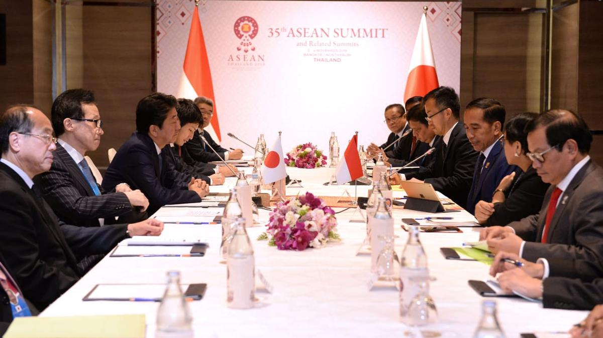

Kerjasama Multilateral
Kerjasama yang melibatkan lebih dari dua negara yang bekerjasama untuk mencapai tujuan bersama.
Tujuan --
- Meningkatkan Kesejahteraan Ekonomi
- Memperkuat Keamanan dan Stabilitas
- Mengatasi Tantangan Global
- Meningkatkan Kualitas Hidup
Contoh --
- Perserikatan Bangsa-Bangsa (PBB)
Organisasi internasional yang terdiri dari hampir seluruh negara di dunia. PBB bekerja untuk menjaga perdamaian dan keamanan internasional, mengembangkan hubungan bersahabat antara negara-negara, dan mempromosikan kerjasama internasional dalam pemecahan masalah global.
- Organisasi Perdagangan Dunia (WTO)
Organisasi internasional yang mengatur perdagangan global antara negara-negara anggota. WTO bertujuan untuk menciptakan sistem perdagangan internasional yang adil dan merata.
- Bank Dunia
Lembaga keuangan internasional yang menyediakan pinjaman dan hibah kepada negara-negara berkembang untuk proyek-proyek yang bertujuan mengurangi kemiskinan dan meningkatkan pembangunan ekonomi.
